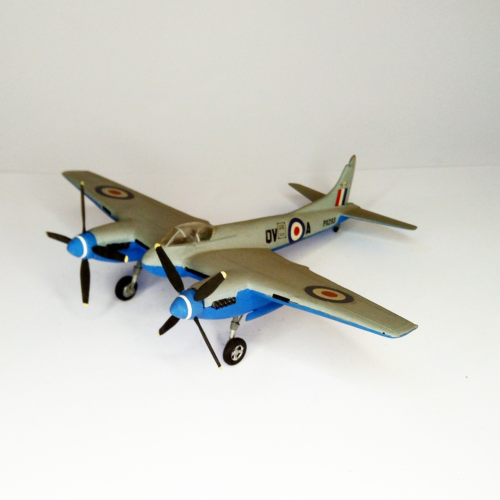

Aerei · scale model archive
De Havilland Hornet
De Havilland Hornet — Kit: FROG, Scale: 1/72. Superfast successor of the Moswuito I sill remember the excessive thickness of the model's vertical…

Photo gallery
English description
Superfast successor of the Moswuito
I sill remember the excessive thickness of the model's vertical tailplane
#1/72 #FROG
Descrizione italiana
Superfast successore del Mosquito.
I still remember il excessive thickness del modello's vertical piano di coda.